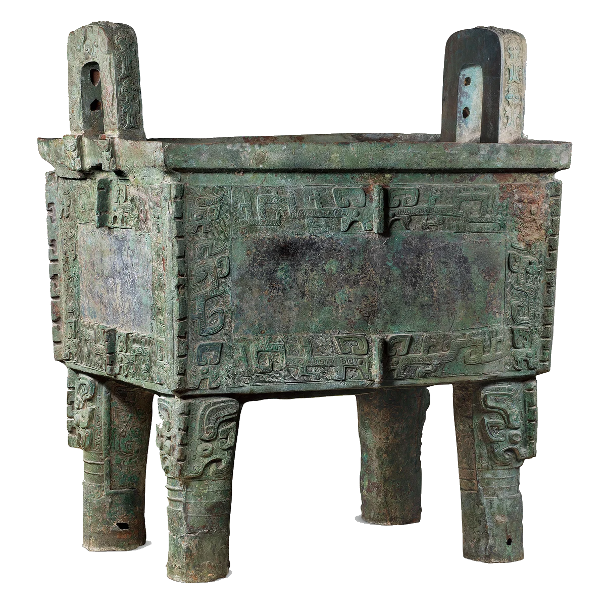
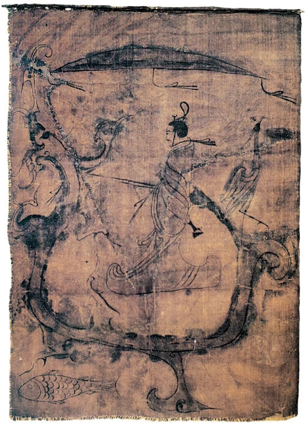
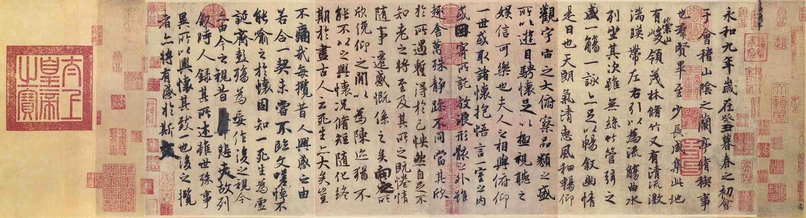
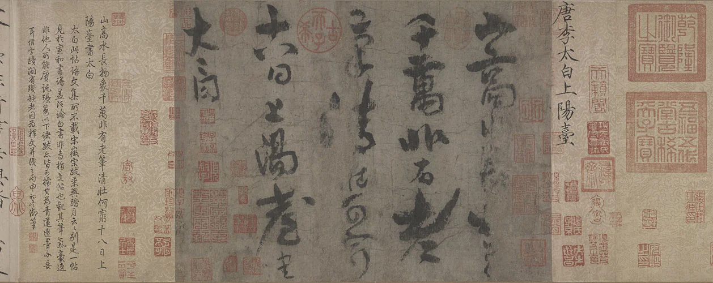
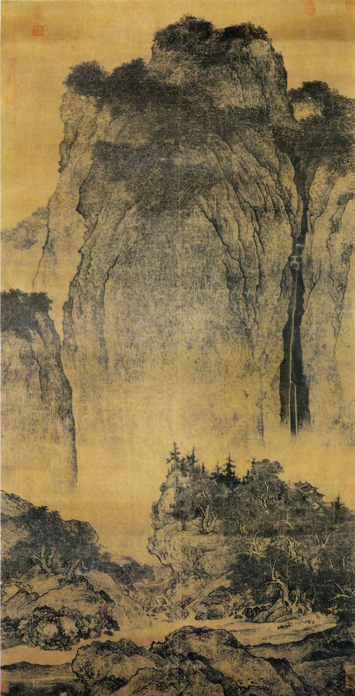
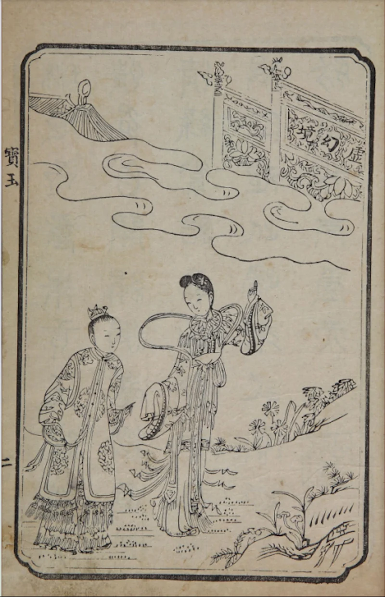

序PREFACE
一部中国人的感觉史
李泽厚把中国美学史写成了一条可以走的路：从史前陶器上旋转的纹样出发，经过青铜的狞厉、楚辞的绚烂、魏晋的风骨、盛唐的气象、宋元的意境，一直走到明清小说里街巷的悲欢。
他不把美当作玻璃柜里静止的标本，而把它看作一种积淀——每一代人的信仰、恐惧与生活，都会慢慢凝结成某种形状，留在器物、文字与笔墨之中。于是历史有了可以触摸的表情。
本折页从中择取六个时代，各配一件代表作、一句审美关键词、一段短读。六折展开，是一条三千年的时间线；合起来，是可以揣进口袋的一册小展。
—— 策展人

第一折BRONZE · SHANG
狞厉
The Awful Sublime
恐怖，被铸成了秩序。
饕餮有首无身，张开的口里含着人。它被铸在祭祖的礼器上：对异族是威吓的符号，对本族却是护佑的神祇——同一张脸，既是威胁，也是庇护。
后母戊鼎腹部的兽面纹在细密的雷纹底上凸起，远看只觉得沉静庄重，走近才看见环睁的目与翻卷的角。李泽厚说，那神秘的威力和狞厉的美，来自一股无法阻挡的历史力量：血与火的年代，借青铜留下了自己的表情。
它们呈现给你的感受，是一种神秘的威力和狞厉的美。
李泽厚《美的历程 · 青铜饕餮》
- 年代
- 商后期，约公元前 13—前 11 世纪
- 材质
- 青铜 · 高 133 厘米，重 832.84 千克
- 纹饰
- 腹部兽面纹（饕餮纹），双耳外侧虎食人首纹
- 藏地
- 中国国家博物馆

第二折CHU · WARRING STATES
浪漫
Romance of the South
南中国不信礼，信神。
画中男子高冠长佩，手执缰绳，立于一条龙形的舟上；龙尾立鹤，龙下有一尾游鱼，头顶覆着华盖——这是一场升天的航行。楚人把死看作远行，把神话当作地理，于是天地之间塞满了龙凤、云气与巫祝的歌声。
屈原把这套想象写进《离骚》：驾八龙，载云旗，上叩帝阍。中原的理性在这里让位给一种更古老、更绚烂的狂热。楚辞的浪漫从来不是闲情，而是把生死、忠愤与宇宙放进同一口气里。
路漫漫其修远兮，吾将上下而求索。
屈原《离骚》
- 年代
- 战国中晚期，约公元前 4—前 3 世纪
- 材质
- 绢本墨绘设色 · 纵 37.5 厘米，横 28 厘米
- 出土
- 1973 年，长沙子弹库楚墓
- 藏地
- 湖南博物院

第三折CALLIGRAPHY · JIN
风骨
Character & Bone
字里，第一次有了人。
汉末以来，品评人物先看风骨，再看形貌——「人」本身成了审美的对象。王羲之在兰亭写下三百二十四字，其中二十个「之」字竟无一相同：有的舒展，有的收紧，有的忽然侧过身去。
笔锋的提按、字距的疏密、行气的断续，都是一个人当下的呼吸。李泽厚把魏晋称为人的觉醒：书法第一次不为经义、不为碑铭，只为一个人的性情与悲欣而流动。
后之视今，亦犹今之视昔。
王羲之《兰亭集序》
- 年代
- 东晋永和九年（353）书，唐摹本
- 材质
- 纸本行书 · 纵 24.5 厘米，横 69.9 厘米
- 递藏
- 真迹已佚，神龙本最接近原貌
- 藏地
- 故宫博物院

第四折POETRY · TANG
气象
The Grandeur
一个字，就是一整片山河。
全帖四行二十五字：「山高水长，物象千万，非有老笔，清壮可穷。」这是李白传世唯一被确认为真迹的墨迹，写给道士司马承祯的阳台观。笔画时而枯涩如裂帛，时而丰润如春水；字与字并不相连，气却一路贯通。
李泽厚把这种饱满、外拓、无所畏惧的美称为盛唐之音：它不属于哪一位诗人，而属于一个时代——疆域、胡乐、酒、剑与诗几乎同时抵达顶点。李白只是把那股气象，写得最像他自己。
君不见黄河之水天上来，奔流到海不复回。
李白《将进酒》
- 年代
- 盛唐，8 世纪
- 材质
- 纸本草书 · 纵 28.5 厘米，横 38.1 厘米
- 题签
- 卷首宋徽宗赵佶题「唐李太白上阳台」
- 藏地
- 故宫博物院

第五折LANDSCAPE · SONG
意境
Poetic Space
人小下去，天地才立起来。
一座巨碑般的山占去三分之二的画幅。山脚下，行旅与驮驴小如蚁点，几乎要被雨点般的皴笔吞没。画家不解释、不抒情，只是让山自己站在那里——李泽厚称之为无我之境：以物观物，故不知何者为我。
到了元代，倪瓒、黄公望开始在笔墨里放进自己的心绪，山水从「师造化」转向「法心源」，意境才由客观转为主观。宋画让人看见世界，元画让人看见那个看世界的人。
无我之境，以物观物，故不知何者为我，何者为物。
王国维《人间词话》 · 李泽厚借以论宋元山水
- 年代
- 北宋，11 世纪初
- 材质
- 绢本浅设色 · 纵 206.3 厘米，横 103.3 厘米
- 签款
- 右下角树丛间有「范宽」二字小款
- 藏地
- 台北故宫博物院

第六折FICTION · MING & QING
世情
The World of Men
美的对象，从此是具体的人。
明代中后期，城市、商贾、书坊与读者一起长大。小说的主角从英雄、神魔换成了街巷里的人：《金瓶梅》第一次把一户人家的账目、口角与欲望放进了长篇的中心。
到《红楼梦》，太虚幻境的牌坊下站着两个十几岁的孩子，悲凉之雾已遍被华林。李泽厚把这一路看作三段——浪漫洪流、感伤主义、批判现实主义。美的对象从此不再是神，也不是山水，而是具体的人，和人的处境。
满纸荒唐言，一把辛酸泪。
曹雪芹《红楼梦》
- 年代
- 清代 · 木刻版画（绣像）
- 形制
- 白棉纸印本 · 单页绣像，四周双栏
- 背景
- 乾隆五十六年（1791）程甲本开木活字印本之先
- 藏地
- 公版扫描影像
结语CODA
从饕餮的狞厉，到世情的悲欢，
美走了三千年。
它一路只做了两件事：把人从神的脚下扶起来，再把神放回人的心里。
李泽厚说，美是「积淀」——历史沉入形式，形式再唤醒历史。
所以折页可以合上，历程不会结束。
- 狞厉商周
- 浪漫战国
- 风骨魏晋
- 气象盛唐
- 意境宋元
- 世情明清
附录CREDITS
展签出处与说明
图像来源
- 后母戊鼎中国国家博物馆藏 · 馆方公开藏品影像
- 人物御龙帛画湖南博物院藏 · 图版据公开报道影像
- 兰亭集序（神龙本）故宫博物院藏 · 馆方公开藏品影像
- 上阳台帖故宫博物院藏 · 馆方公开藏品影像
- 谿山行旅图台北故宫博物院藏 · 公有领域复制件
- 《红楼梦》绣像清代刊本 · 公有领域扫描影像
本页为课程阅读成果展示，不作商业用途。图像仅用于说明与评论，版权归各收藏机构所有；如需商用请另行取得授权。
参考与延伸
- 李泽厚《美的历程》，生活·读书·新知三联书店
- 王国维《人间词话》
- 屈原《离骚》；王羲之《兰亭集序》；曹雪芹《红楼梦》
- 《中国美术史》相关卷次 · 各馆藏品著录
制作
- 手写 HTML / CSS / JavaScript，无框架、无追踪
- 正文字体：思源宋体（Noto Serif SC，SIL Open Font License 1.1）
- 纸张纹理、折痕与印章由 CSS 绘制